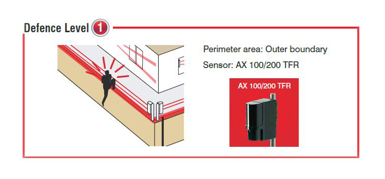
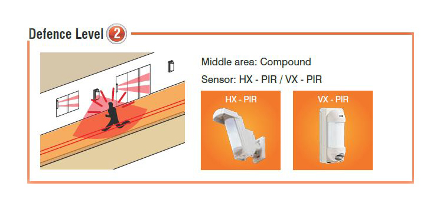
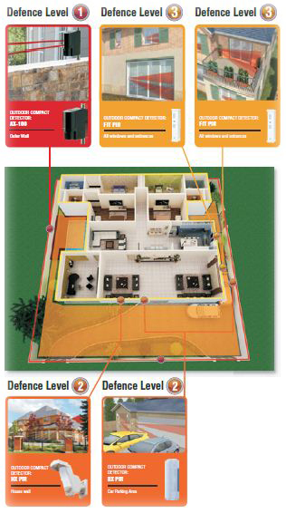
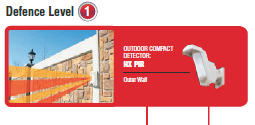
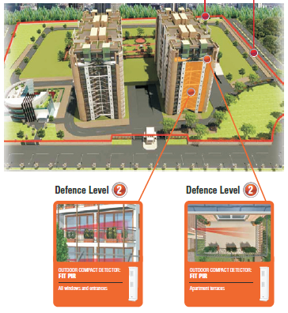
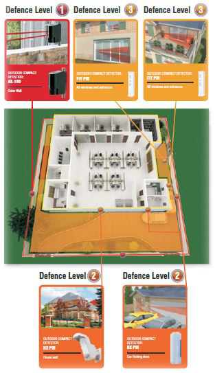
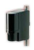
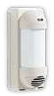
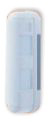
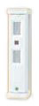

Security measures that alert you to break-ins to your premises still leave you vulnerable. That's because they allow the threat to infiltrate the building before alerting you. Not only does thisput you in danger, it needlessly endangers your loved ones and your property.
Appointing security guards might provide ameasure of security, but it doesn't ensure your property is completely secured. Not only is there room for human error on the part of the most diligent guard, all it takes is a moment's inattention for burglars to force their way into your property.
When it comes to threats, an offensive approach is always better than a defensive one. Keeping the need for intensive security measures in mind,Ceasefire now provides a foolproof security system that stops burglars in their tracks, before they can penetrate your property. Ceasefire presents Vigil - an alarm-based security system that secures the gates and walls around your property.
Using dual infra-red detectors to detect unusual activity, Vigil raises the alarm if the walls surrounding your property are breached or if your gate is threatened. Not only does this revolutionary system assure you of the security of your property, the alarm and alerting systems serve as a deterrent to potential threats.
Vigil is ideal for private homes and villas,factories, residential societies, offices, malls,corporate parks and commercial complexes.After all, it's perfectly equipped to keeps your property's perimeter well protected, keeping threats where they belong - outside!
How Vigil works
Dependable and untiring, Vigil never takes a break. Vigil offers a 24x7 security solution, virtually sealing off your gates and the boundary walls around your property from intruders. Featuring dual infra-red sensors with different ranges that can differentiate between environmental disturbances and genuine threats, Vigil ensures that danger cannot come unannounced - ever!
Offering wireless convenience, stylish design and dual detection zones for superior stability and improved false alarm protection for reliability, Vigil's detectors are also weather proof and have been designed to be environmentally responsive to ensure customisable installation.
Vigil offers multiple types of outdoor and perimeter detectors - AX AIR, HX - PIR, VX PIR , BX PIR and FIT PIR-that can be installed according to thecharacteristic of your property.
Co-ordinating the network of perimeter detectors
is a state-of-the-art Control Panel,that sets off a piercing alarm as well as alerts you of the intruders.
The 3-Tier Defence levels  

Vigil and how it can secure your property
Villas
Vigil's 3-tier defence alerts you about out-of-the-ordinary occurrences such as a burglar scaling the compound walls or cutting your gates.

Residential Societies
Though the size of such properties make them difficult to guard, Vigil provides assistance to the security team and will alert them to any suspicious activity around the boundary.
 Commercial Complex
Vigil's infra-red rays around the gates and perimeter walls keep commercial complexes secure even
when they are deserted by night.

The Complete Range of Vigil Security Systems and Products
 AX 100/200 TFR
The AX-AIR signals a revolution in the perimeter security industry. Easy to
use, the AX AIR comprises a point-to-point transmitter and receiver, which
cover a long range - AX 100 (approximately 30 meters and AX 200
(approximately 60 meters).
 HX PIR
HX PIRThe most important element in a reliable outdoor detector is accuracy in
distinguishing a human from a small animal. The exclusive pyro element
on board enables the HX PIR to project an ideal detection pattern, allowing
for more accurate detection of humans and less false alarms.
 VX PIR
The VX PIR is not only ideal for intruder prevention it can also be used as a
safety warning device to alert you if children enter unsafe areas such as
the swimming pool. As it plays a recorded message the instant it detects
movement, VX PIR can also be used to automatically greet customers
entering a store.
 BX PIR
BX PIR creates 24m unique dual-side detection areas that protect wide
horizontal areas around buildings and will trigger alarm before the break
-in.With this unit you don't have to worry about false alarms. It doesn't
activate unless the upper and lower detection zones detect a moving
object.
 FIT PIR
Versatile and reliable, FIT PIR is the perfect solution for those outdoor
areas where environmental disturbances and small animals may cause
false alarms. This compact, invisible outdoor sensor is highly reliable and
can be used in various locations such as outside windows, near pools,
garages, balconies and balcony doors.